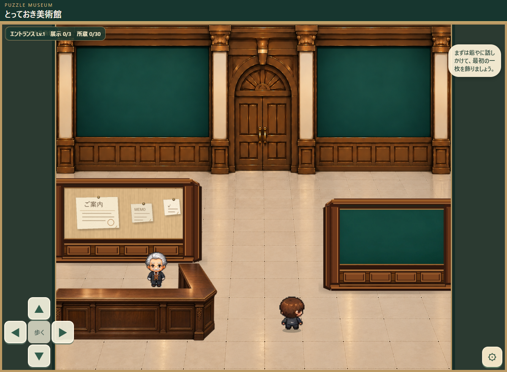

とっておき美術館｜受付の掲示物
v09の明るい木壁はそのまま。カウンターと左壁を15px下へ動かして、紙の装飾だけ追加した監修用プレビュー。

ゲームを実際にChromeで動かして撮影した画面。紙3枚を表示しています。背景・キャラクター・右壁は変更していません。
位置の変更（反映済み）
左仕切り壁：X=-6 / Y=215 / 幅215 / 高さ122
カウンター：X=-10 / Y=333 / 幅233 / 高さ107
右仕切り壁：X=363 / Y=243 / 幅188 / 高さ133（変更なし）
独立素材：紙3枚
これは監修用プレビュー。紙は壁や背景に焼き込んでおらず、ゲーム内でも3枚の透明スプライトとして個別管理しています。家具の当たり判定・爺やの動線は今回の仕上げ対象外。正式ゲームの公開版はまだ変更していません。